Хлебопечка X780
Особенности
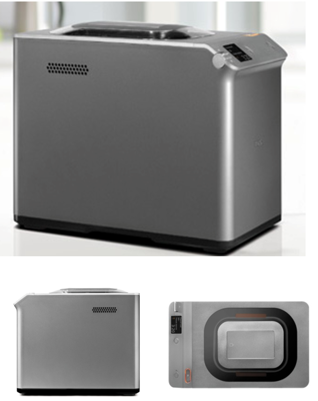- Первая хлебопечь с голосовым гидом
- 2 литые алюминиевые формы для выпечки
- Диспенсер для дополнительных ингредиентов
- Собственный рецепт «домашний хлеб»
- Режим медленного приготовления
Устройство
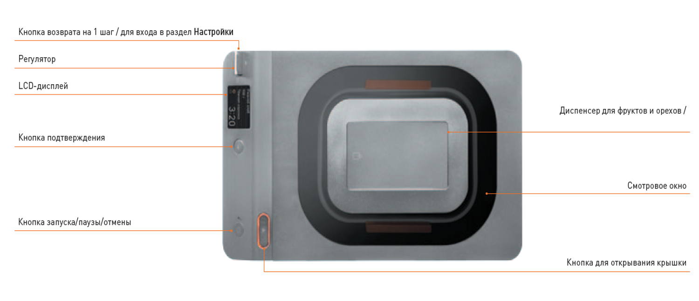 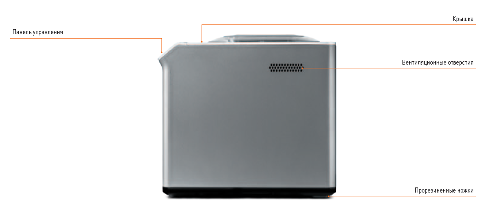Комплектация
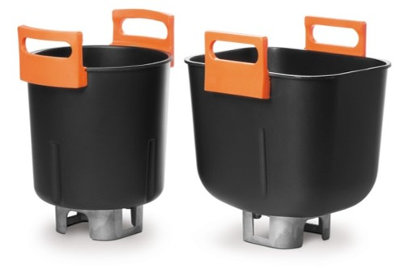
Круглая форма для выпечки: 1 шт.
Прямоугольная форма для выпечки: 1 шт.
Лопасть для джема: 1 шт.
Лопасть для теста: 1 шт.
Крючок для извлечения лопасти: 1 шт.
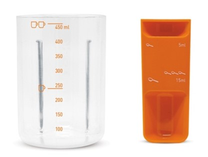
Мерный стакан (450 мл): 1 шт.
Мерная ложка: 1 шт.
2 литые алюминиевые формы для выпечки
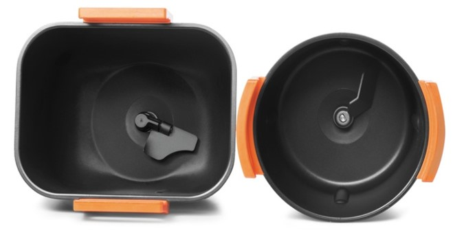Хлебопечь оснащена 2-мя формами для выпечки из литого алюминия, которые позволяют готовить не только хлеб традиционной формы, но и настоящие куличи, круглые и пышные.
Преимущества литых алюминиевых форм: утолщенные стенки исключают любой тип деформации (от перегрева, падения, долгого использования), обеспечивают равномерный прогрев, благодаря высокой теплопроводности и долговечность антипригарного покрытия.
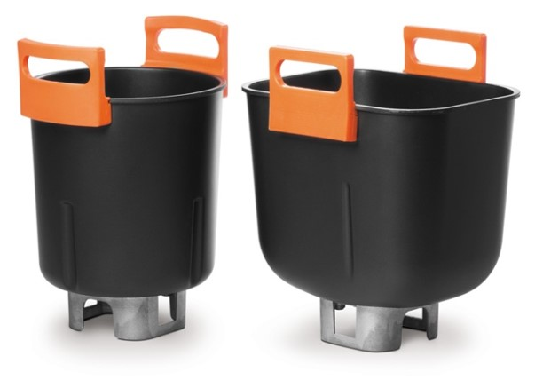Силиконовые ручки для удобного извлечения готового хлеба выдерживают высокие температуры внутри камеры.
Диспенсер для дополнительных ингредиентов
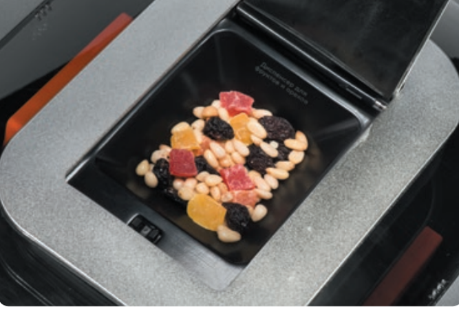Для дополнительного удобства в хлебопечь встроен диспенсер, с помощью которого устройство автоматически загружает в тесто дополнительные ингредиенты (изюм, орехи, сухофрукты, шоколадную крошку).
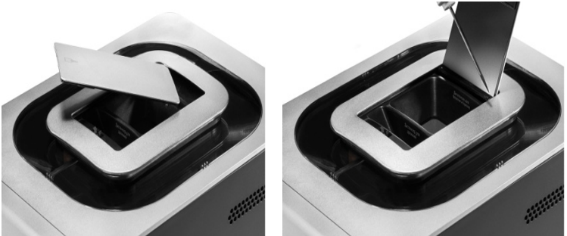Чистка диспенсера. Откройте крышку диспенсера под углом 90°, нажав на иконку. Установите отвертку в паз и подденьте штифт влево по направлению стрелки. Снимите крышку, опустив ее вниз.
Информативный LCD-дисплей
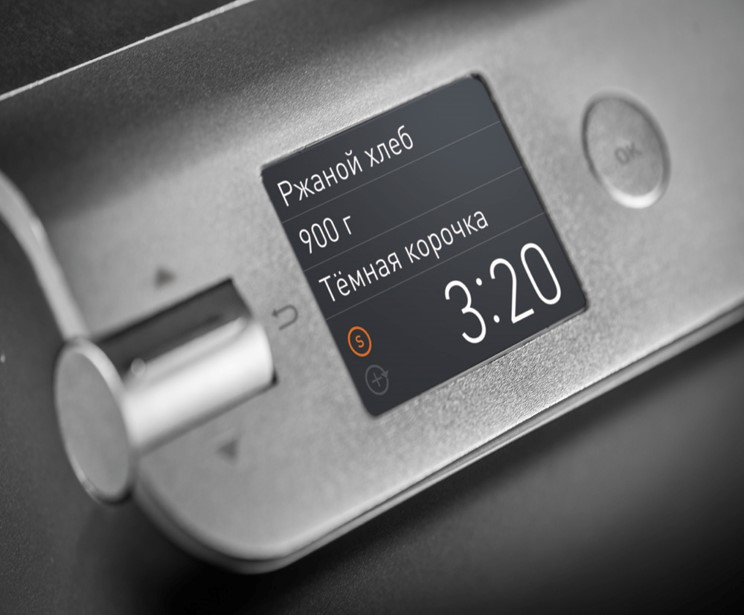Отражает текущие процессы работы хлебопечи: режим, информационные сообщения и другое. Поддерживает 2 языка: русский и английский.
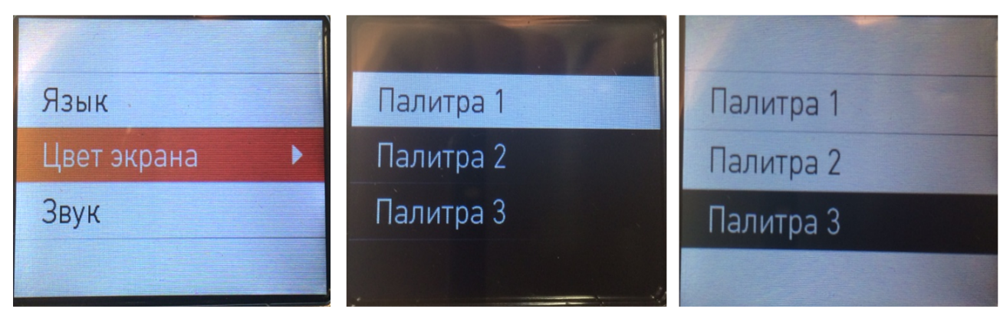3 Палитры экранного меню
17 автоматических программ
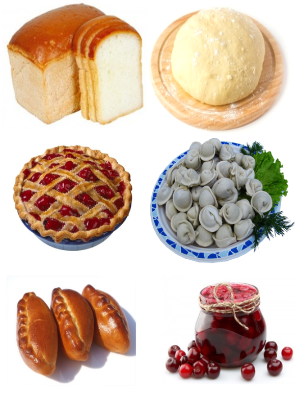Позволяют готовить самые разнообразные виды хлеба, теста и джема:
- Основной режим
- Основной режим — медленное приготовление
- Ржаной хлеб
- Ржаной хлеб — медленное приготовление
- Французская выпечка
- Французская выпечка — медленное приготовление
- Цельнозерновой хлеб
- Цельнозерновой хлеб — медленное приготовление
- Сладкая выпечка
- Сладкая выпечка — медленное приготовление
- Быстрая выпечка
- Хлеб без глютена
- Кулич
- Домашний хлеб
- Тесто
- Тесто для пасты
- Йогурт
- Ряженка
- Джем15
- Выпекание
Режим медленного приготовления
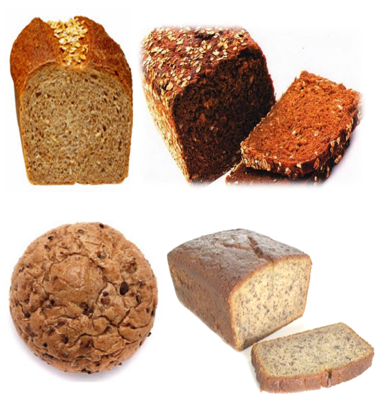Режим медленного приготовления дает возможность выпекать хлеб из муки грубого помола на основе традиционных рецептов, в том числе с использованием домашней закваски. По мнению диетологов, такой хлеб является самым полезным.
Выпечка такого хлеба требует увеличения времени расстойки и подъема теста, что и реализуется в данном режиме. Это гарантирует более качественное пропекание и более правильную форму, цвет и вкус.
Собственный рецепт «домашний хлеб»
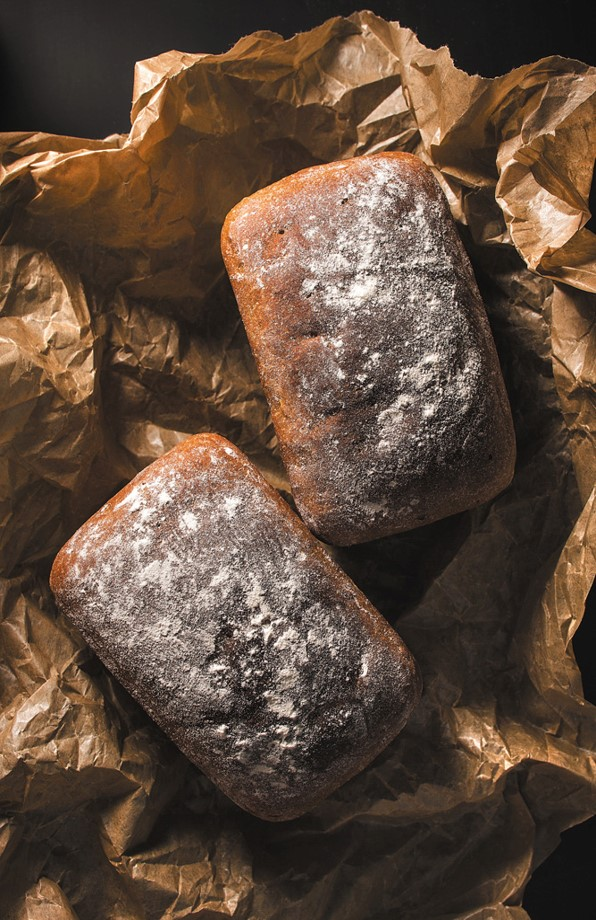Благодаря программе ≪Домашний хлеб≫ можно фантазировать и делать эксклюзивную выпечку по собственному рецепту.
Режим позволяет изменить время каждого цикла:
- Время нагрева (0—0:20)
- Замес (0—0:30)
- Расстойка (0—0:30)
- Замес (0—0:30)
- Подъем (0—1:30)
- Выпекание (0—1:30)
- Подогрев (0—1:00)
Оригинальный мерный стакан c мерной ложкой
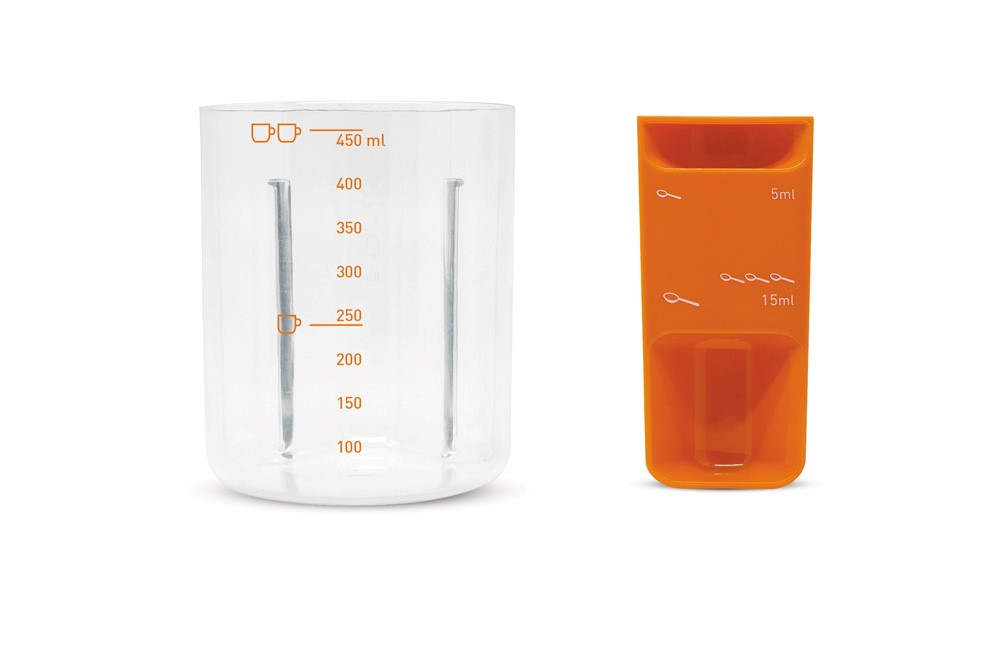Режим энергосбережения
Хлебопечь автоматически переходит в режим энергосбережения через 3 минуты.Для выхода из режима энергосбережения нажмите любую кнопку прибора.
Технические характеристики
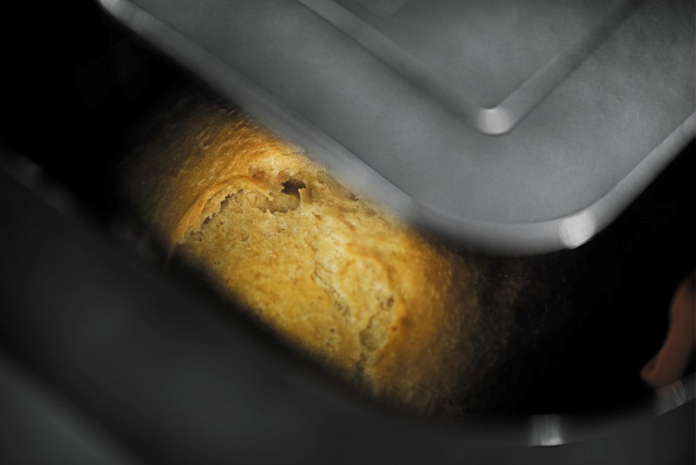
Напряжение: 220–240 В
Частота: 50–60 Гц
Мощность: 520 Вт
17 программ
Диспенсер
2 формы для выпекания
Вес выпечки: 500, 750 и 900 г
Отложенный старт: до 15 ч.
Габариты (В×Ш×Г): 307×240×398 мм
Вес: 7,65 кг
Сделано в Китае
Аргументы для продажи
- Первая хлебопечь с голосовым гидом
- Две литые алюминиевые формы для выпечки
- Две металлические лопасти для замешивания теста и джема
- Диспенсера для дополнительных ингредиентов
- Информативный LCD-дисплей
- Два языка: русский, английский
- Три палитры экранного меню
- 16 автоматических программ
- Собственный рецепт «домашний хлеб»
- Режимы медленного приготовления
- Оригинальный мерный стакан с мерной ложкой
- Режим энергосбережения
- Плавное открывание крышки с помощью клавиши: электронное и механическое
- Функция отложенного старта
- Три варианта веса готовой выпечки и три цвета корочки
- Подсветка камеры печи